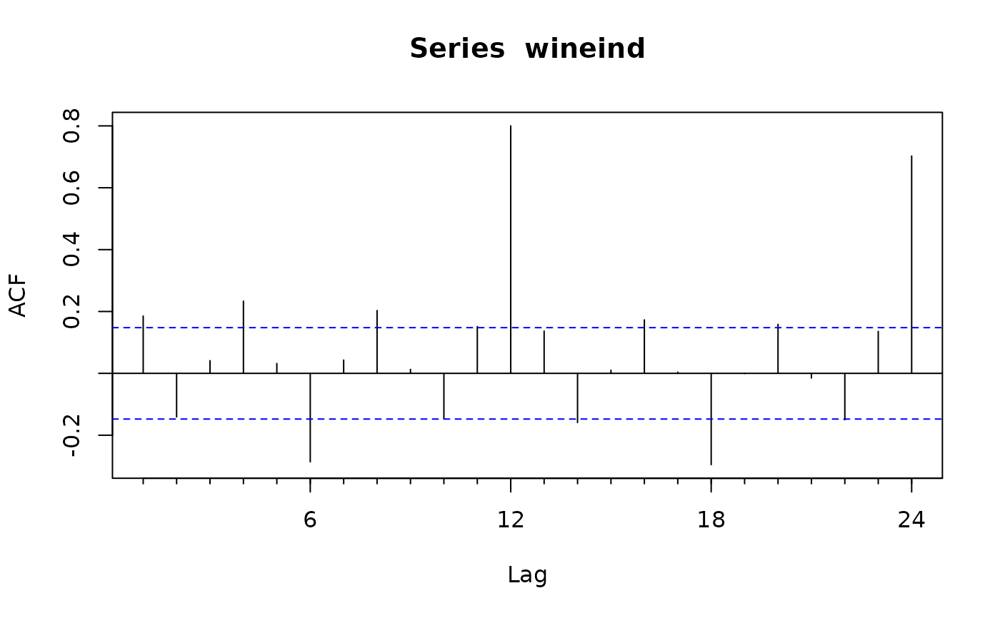
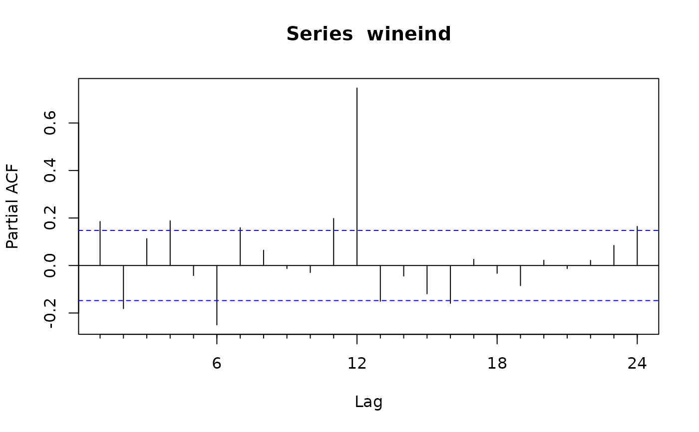

The function Acf computes (and by default plots) an estimate of the
autocorrelation function of a (possibly multivariate) time series. Function
Pacf computes (and by default plots) an estimate of the partial
autocorrelation function of a (possibly multivariate) time series. Function
Ccf computes the cross-correlation or cross-covariance of two
univariate series.
Acf( x, lag.max = NULL, type = c("correlation", "covariance", "partial"), plot = TRUE, na.action = na.contiguous, demean = TRUE, ... ) Pacf( x, lag.max = NULL, plot = TRUE, na.action = na.contiguous, demean = TRUE, ... ) Ccf( x, y, lag.max = NULL, type = c("correlation", "covariance"), plot = TRUE, na.action = na.contiguous, ... ) taperedacf( x, lag.max = NULL, type = c("correlation", "partial"), plot = TRUE, calc.ci = TRUE, level = 95, nsim = 100, ... ) taperedpacf(x, ...)
| x | a univariate or multivariate (not Ccf) numeric time series object or a numeric vector or matrix. |
|---|---|
| lag.max | maximum lag at which to calculate the acf. Default is $10*log10(N/m)$ where $N$ is the number of observations and $m$ the number of series. Will be automatically limited to one less than the number of observations in the series. |
| type | character string giving the type of acf to be computed. Allowed
values are “ |
| plot | logical. If |
| na.action | function to handle missing values. Default is
|
| demean | Should covariances be about the sample means? |
| ... | Additional arguments passed to the plotting function. |
| y | a univariate numeric time series object or a numeric vector. |
| calc.ci | If |
| level | Percentage level used for the confidence intervals. |
| nsim | The number of bootstrap samples used in estimating the confidence intervals. |
The Acf, Pacf and Ccf functions return objects
of class "acf" as described in acf from the stats
package. The taperedacf and taperedpacf functions return
objects of class "mpacf".
The functions improve the acf,
pacf and ccf functions. The main
differences are that Acf does not plot a spike at lag 0 when
type=="correlation" (which is redundant) and the horizontal axes show
lags in time units rather than seasonal units.
The tapered versions implement the ACF and PACF estimates and plots described in Hyndman (2015), based on the banded and tapered estimates of autocovariance proposed by McMurry and Politis (2010).
Hyndman, R.J. (2015). Discussion of ``High-dimensional autocovariance matrices and optimal linear prediction''. Electronic Journal of Statistics, 9, 792-796.
McMurry, T. L., & Politis, D. N. (2010). Banded and tapered estimates for autocovariance matrices and the linear process bootstrap. Journal of Time Series Analysis, 31(6), 471-482.
Rob J Hyndman
Acf(wineind)Pacf(wineind)if (FALSE) { taperedacf(wineind, nsim=50) taperedpacf(wineind, nsim=50) }